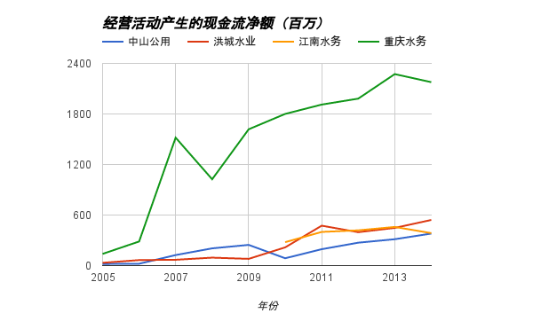
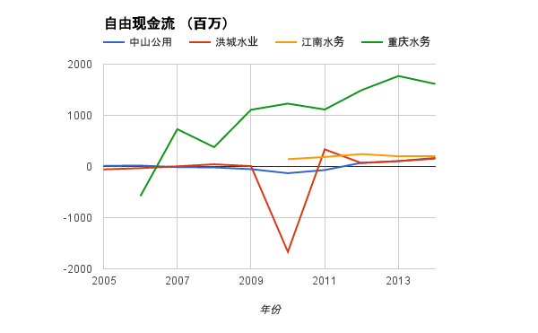

公司估值¶
选择了两种不同的方法评估这几家公司： - EV/EQ。选择EV/EQ，主要是因为水务行业是一个资产驱动型的行业，资产规模，特别是固定资产规模，越大，创造价值的能力也越强。
- 净现金流折现法。选择净现金流折现法，主要是因为水务行业有充沛的现金流，从长期来看，一个公司创造的自由现金流可以认为是这个公司的价值。
最后，我们比较了两种方法得到的公司估值，分析讨论之后得到了各个公司的综合估值。
EV/EQ估值法¶
ROIC的选择
用EV/EQ对公司进行估值，首先要确定ROIC。下图是过去十年内四家公司的ROIC。可以看出，中山公用一直是保持着较高的ROIC，而江南水务则最低。重庆水和洪城水业的ROIC平均值比较接近，但重庆水务的表现一直较为稳定，洪城水业则有较大波动。
仔细分析2014年的ROIC。最高的是中山水务22%，其次是洪城水业14%，重庆水务和江南水务都接近8%。中山水务和洪城水业的ROIC高可以说明他们用较少的资产实现了较多的收益。这对中山水务来说是个中肯的评价，但对洪城水业来说，还要客观的分析另外两个因素： - 洪城水业的EBIT相对于资产来说是不错，但EBIT并没有成为最终的利润，过高的利息（占了一半的EBIT）让净利润降低到了和江南水务一个水平。洪城水业的流动资产太少了，尤其是现金资产太少了，这对于一个水务公司来说并不正常。这样的ROIC即使高也只能说是外强中干。
- 江南水务和重庆水务的ROIC过低都是因为二者持有较多资产。其中江南水务2010年发行A股，所以手持较多现金。重庆水务持有大量的现金和固定资产，也拉低了ROIC。
| 2014年（百万） | ROIC | EBIT | 流动资产 | 固定资产 |
| 中山水务 | 22.16% | 896.73 | 1650.67 | 2389.81 |
| 洪城水业 | 14.01% | 307.91 | 629.73 | 1009.79 |
| 江南水务 | 6.24% | 165.14 | 1388.33 | 1388.62 |
| 重庆水务 | 8.65% | 1297.39 | 8821.19 | 8266.72 |
针对上面的分析，个人选择平均十年为水务行业的回本年限，但对下面两个公司做了微调。
- 洪城水业：这里对洪城水业的回本年限选择7年。这主要是因为洪城水业极高的资产负债率导致的财务风险。
- 重庆水务：这里对重庆水务的回本年限选择12年。这主要是因为重庆水务在重庆市场的垄断地位和规模优势。
| 单位：百万 | 现市值 | EV/EQ估值 | 近十年ROIC | 回本年限 |
| 中山公用 | 35111 | 10725 | 29.12% | 10 |
| 洪城水业 | 4323 | 347 | 12.30% | 7 |
| 江南水务 | 8952 | 3331 | 7.99% | 10 |
| 重庆水务 | 44592 | 22358 | 10.08% | 12 |
EV/EQ方法得到的估值中，洪城水业因为长期负债特别高，而流动资产非常少导致估值非常低。江南水务的估值较低主要是因为其ROIC较低。其他三个公司的估值基本上是现在市值的1/3 - 1/2，作为投资者需要耐心等待。
净现金流折现法¶
水务行业作为一个现金流充沛而且稳定的行业，用现金流折算的方法是一个非常恰当的方式。回本时限依旧选择十年，折现率考虑过去几年的高通胀，但也考虑之后降息应该会是大方向，选择折现率为5%。
首先看看公司的现金流。可以看出在过去十年，所选公司的经营活动产生的现金流净额都有了极大提升，最少的是江南水务，过去五年增长了40%。而剩余三者都基本上翻了十倍以上，获得了巨大的成长。
再看这些公司的自由现金流，除了在2010年前后由于大力购买固定资产、无形资产，资本开支过大，大部分年限内这些公司的自由现金流都为正，说明公司的现金流能够满足正常运营。在无需业务扩展的情况下，这些公司不需要外部输血。
初始现金流的选择：
- 中山公用：2014年的自由现金流为167百万，十年平均值为9.42百万。2011年之前自由现金流基本为负，近三年平均现金流为110百万。考虑到公司已经基本完成了自来水业务的布局，但下一步仍需要收购污水处理厂，自由现金流自2015年起取100百万。
- 洪城水业：2014年的自由现金流为154百万，十年内平均值为-104百万，如果剔除2010年的一次性收购的资本开支24亿，十年内平均值为140百万。考虑到公司现在基本完成 了自来水业务和污水处理业务的布局，自由现金流取150百万。
- 江南水务：2014年的自由现金流为201百万，自公司2010年上市近五年平均值194百万，非常稳定。于是选择2015的自由现金流为200百万。
- 重庆水务：2014年的自由现金流为1613百万，近十年内平均值为984百万。考虑到现金流近十年是稳定增长，出现大幅度回撤的概率较小。选前述两个值的平均值，1300百万作为2015年的自由现金流。
现金流增长速度的选择：
- 中山公用：近十年的平均增长速度为11.08%。保守选择10%。
- 洪城水业：近十年的平均增长速度为-2357%，这是因为受到了2010年那笔大额交易的影响。剔除这个影响，近十年平均增长速度为70%。想要保持70%的增长速度也不太可能，这里选择和中山公用一样，10%。
- 江南水务：自公司上市五年来自由现金流的平均增长速度为10.78%，稳定增长，所以就选择10%。
- 重庆水务：近十年的平均增长速度为-4.5%，这其中2008年自由现金流大幅下降是一定原因。考虑2009年之后则增长速度为27%，但同时也考虑到公司在重庆市的市场占有率接近饱和，想要保持这种快速增长也不可能，同样选择10%。
| 单位：百万 | 现市值 | 现金流估值 | 初始现金流 | 现金流增长速度 |
| 中山公用 | 35111 | 1243 | 100 | 10% |
| 洪城水业 | 4323 | 1865 | 150 | 10% |
| 江南水务 | 8952 | 2480 | 200 | 10% |
| 重庆水务 | 44592 | 14805 | 1300 | 10% |
用净现金流折现法得到的估值，中山公用和市场给出的估值差距非常大。主要原因是市场不太关心它的现金流创造能力，更关心的是它的资产，尤其是广发证券11.9%的股份。这部分资产并不会像水务行业一样创造稳定的现金流，所以导致了现金流方法的估值和市场估值差距较大。
两种方法对比¶
对比EV/EQ，现金流折现法这两种方法，江南水务和重庆水务的估值比较接近，可能是在2015年的自由现金流和未来十年的增长速度保守了一些，不然可能两个估值方法的结果会基本吻合。
但这两种方法在中山公用和洪城水务上有较大分歧：
- 中山公用。EV/EQ的估值是现金流估值的近10倍。这实际上是说明中山公用手握较多资产，但创造现金流的能力却并不优秀。原因上面已经分析了，非流动资产中过半都是长期股权投资，创造现金流的能力不如供水业务。这两个估值之间的选择，个人倾向于用资产的角度来看这个问题，因为持有的广发证券和广州农商银行长期看都是非常好的投资，单纯从现金流的角度看不太公平。这里再用清算价值来分析，中山公用的流动资产1650百万，其中大部分为现金或银行理财，固定资产1662百万，长期股权投资5489百万（其中包括广发证券11.6%的股权），即使固定资产按清算比例50%计算，扣除总负债2319百万，仍然剩余7970百万。这个估值介于EV/EQ和净现金流折现法之间，最后选择这个数值作为中山公用的综合估值。
- 洪城水业。现金流估值是EV/EQ的近5倍。这最直接的原因就是公司的长期负债太高，流动资产太少。但现金流稳定。在这种情况下，我认为EV/EQ的方法更适合洪城水业，因为只有当一个公司财务风险解除的时候，才能谈稳定的现金流。无法到期偿还债务的公司，即使有稳定现金流又如何呢？
| 单位：百万 | 现市值 | 综合估值 | 现金流估值 | EV/EQ估值 |
| 中山公用 | 35111 | 7970 | 1243 | 10725 |
| 洪城水业 | 4323 | 347 | 1865 | 347 |
| 江南水务 | 8952 | 2480 | 2480 | 3331 |
| 重庆水务 | 44592 | 14805 | 14805 | 22358 |